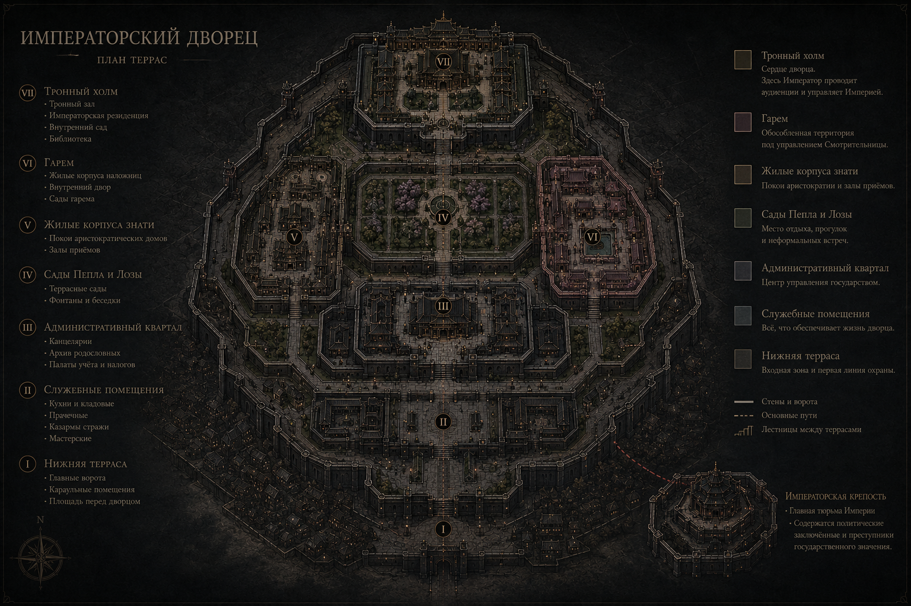

Город внутри города. Каждое крыло — отдельная политика.
Дворец возведён на семи террасах, поднимающихся от городских ворот к тронному холму — так, что каждый проситель поднимается к Императору буквально, ступень за ступенью. Чёрный камень нижних стен переходит в золочёный мрамор верхних ярусов: чем выше — тем меньше народу дозволено ходить.

План террас — от Нижней террасы до Тронного холма
Зал Первой Крови — колонны из тёмного камня, инкрустированные линиями отполированного золота, символизирующими родословные. Аудиенции здесь редки и коротки.
Канцелярии, архив родословных, палаты сборов и учёта земель — сюда стекаются донесения со всей Империи прежде, чем попасть на стол Канцлера.
Террасные сады, названные в честь дерева, что выжило после пожара времён Раскола Крови. Место неформальных встреч — и, соответственно, тайных разговоров.
Крыло для приезжей аристократии — каждая семья получает покои, соответствующие рангу дома, что само по себе источник обид и статусной борьбы.
Отдельный обособленный комплекс с собственными садами и внутренним двором — золотая клетка, охраняемая снаружи и управляемая изнутри Смотрительницей.
Вынесена за пределы основных стен дворца — отдельная крепость на отшибе, соединённая с террасами единственной дорогой. Здесь содержат политических пленников и преступников государственного значения — тех, о ком Империя предпочитает забыть, не рискуя держать их под одной крышей с троном.
Кухни, прачечные, казармы дворцовой стражи — незаметная, но необходимая часть организма дворца, где также циркулируют самые быстрые слухи.
Сеть переходов, изначально построенных для эвакуации императорской семьи, а ныне используемых с самыми разными, не всегда законными целями.
Придворный этикет во дворце строг почти до абсурда: очерёдность речи, дистанция при поклоне, право первого слова — всё регламентировано, потому что мельчайшее нарушение читается как политическое заявление. В таких условиях даже случайная оплошность может стоить карьеры — или головы.